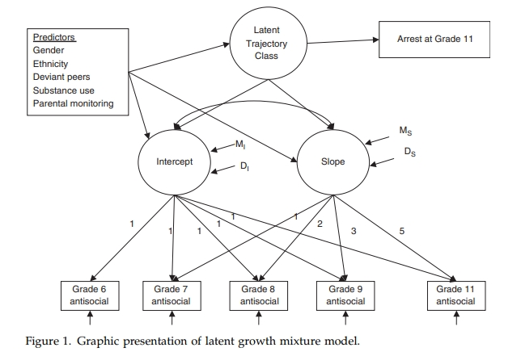

本文介绍了混合增长模型(潜增长混合模型)（Latent Growth Mixture Modeling, LGMM） , 我们通过一个案例介绍了:
- GMM模型概念
- Mplus转写GMM代码
- 结果解读
摘要
本教程旨在介绍生长混合模型（Growth Mixture Modeling, GMM）在发展心理学中的应用，并通过一个实际案例演示如何利用GMM分析青少年反社会行为发展轨迹的异质性。GMM是一种强大的统计工具，能够识别出人群中不同发展轨迹的亚组，并探究影响这些轨迹的因素。通过本教程的学习，读者可以了解GMM的基本原理、应用步骤和结果解释，为相关领域的研究提供方法指导。
GMM分析的两个主要阶段
阶段一：确定最佳亚组数量（Model Selection）
- 目标： 确定数据中存在几个不同的发展轨迹亚组，即找到能够最好地描述数据的亚组数量。
- 方法：
- 拟合多个模型： 从1个亚组开始，逐步增加亚组数量（例如，1个亚组、2个亚组、3个亚组……），并对每个模型进行拟合。
- 比较拟合指标： 比较不同亚组数量模型的拟合指标，常用的指标包括：
- 贝叶斯信息准则（BIC）： BIC值越小，模型拟合越好。
- Lo-Mendell-Rubin似然比检验（LMR-LRT）： LMR-LRT的p值越小（通常小于0.05），表明当前模型比减少一个亚组的模型拟合更好。
- 熵（Entropy）： 熵值越高（接近1），表明模型分类的准确性越高。
- 综合判断： 综合考虑以上指标，选择最优的亚组数量。通常情况下，BIC和LMR-LRT是最重要的参考指标。此外，还需要考虑亚组的可解释性和实际意义。
- 结果： 确定一个最优的亚组数量，例如2个亚组、3个亚组等。
阶段二：解释亚组特征和预测因素（Interpretation and Prediction）
- 目标： 描述每个亚组的发展轨迹特征，并探究哪些因素能够预测亚组归属和轨迹形状。
- 方法：
- 描述亚组轨迹： 描述每个亚组的平均轨迹，包括初始水平（截距）和随时间的变化速度（斜率）。可以将轨迹绘制成图，以便更直观地展示。
- 探究亚组预测因素： 将亚组归属作为一个分类变量，探究哪些因素能够预测个体属于哪个亚组。通常使用logistic回归模型进行分析。
- 探究轨迹预测因素： 在每个亚组内，探究哪些因素能够预测轨迹的初始水平和变化速度。可以使用线性回归模型或结构方程模型进行分析。
- 考察结果变量： 分析不同的亚组是否在某些结果变量上存在差异，例如，不同的反社会行为轨迹亚组是否在成年后的犯罪率上存在差异。可以使用方差分析、卡方检验或生存分析等方法进行分析。
- 结果： 描述每个亚组的发展轨迹特征，确定影响亚组归属和轨迹形状的预测因素，以及不同亚组在结果变量上的差异。
案例教程
1. 数据介绍
本教程使用的数据来自一项纵向研究，该研究旨在追踪青少年问题行为的发展。研究对象为498名青少年，从12岁（六年级）开始，一直追踪到17岁（十一年级）。研究收集了青少年在不同时间点的反社会行为数据，以及相关的风险因素和保护因素，包括：
- 反社会行为： 通过学生自评问卷测量，问卷包含6个项目，例如对父母说谎、逃学、深夜不归、偷窃等。
- 风险因素：
- 性别（Gender）： 分为男性和女性。
- 种族（Ethnicity）： 分为欧洲裔美国人和其他族裔。
- 不良同伴（Deviant Peers）： 测量青少年与不良同伴交往的频率。
- 物质使用（Substance Use）： 测量青少年是否使用酒精、烟草或大麻。
- 父母监督（Parental Monitoring）： 测量父母对青少年活动的知晓程度。
- 结果变量： 在17岁时是否被捕（Arrest）。
2. 模型介绍
混合增长模型（GMM）是一种用于分析纵向数据的统计技术，其核心思想是：假设人群不是同质的，而是由若干个潜在的亚组构成，每个亚组具有不同的发展轨迹。GMM可以同时估计以下参数：
- 亚组数量（Number of Classes）： 确定数据中存在几个不同的发展轨迹亚组。
- 轨迹形状（Trajectory Shape）： 描述每个亚组的发展轨迹，通常用截距（Intercept）和斜率（Slope）来表示。截距代表初始水平，斜率代表随时间的变化速度。
- 亚组比例（Class Proportion）： 表示每个亚组在总人群中所占的比例。
- 亚组预测因子（Class Predictors）： 探究哪些因素能够预测个体属于哪个亚组。
- 轨迹预测因子（Trajectory Predictors）： 在每个亚组内，探究哪些因素能够预测发展轨迹的初始水平和变化速度。
在本案例中，我们使用GMM来识别青少年反社会行为发展轨迹的亚组，并探究性别、种族、不良同伴、物质使用和父母监督等因素对亚组归属和轨迹形状的影响。
模型图如下:
参照图中的模型解读:
- antisocia 是重复观测的变量, 反社会行为变量
- Intercept: 是截距，代表初始水平，即在6岁时，青少年的反社会行为水平。在GMM模型中, 截距是一个潜变量, 它的观测指标就是重复测量的 antisocia, 而因子载荷固定为1.
- Slope: 是斜率，代表随时间的变化速度。在GMM模型中, 斜率是一个潜变量, 它的观测指标就是重复测量的 antisocia, 而因子载荷固定为1 2 3 4 5. 因子载荷实际上是时间.
- Latent Trajectory Class: 潜在类别, 是用于将学生分类的分类变量, 不同类别的学生的反社会行为的发展轨迹不同.
- 危险因素: 左上角的变量都是危险因素, 他们会影响潜在类别和截距和斜率, 也会影响结果变量犯罪率.
3. 代码解读
本教程使用Mplus软件进行GMM分析。以下是Mplus代码的关键部分解读：
1 | TITLE: Two-group latent growth mixture model |
- VARIABLE部分： 定义变量名称、缺失值处理方式和变量类型（分类变量或连续变量）。
CLASSES = c(2)指定模型拟合两个亚组。 - ANALYSIS部分： 指定分析类型为混合模型（MIXTURE），估计方法为MLR（稳健的最大似然估计）。
- MODEL部分： 定义模型结构。
%overall%定义总体模型，包括截距（i）和斜率（s），以及它们之间的关系。i s on gender2 ethncalt cpwdp11 sucat1r cpwpm11表示截距受到性别、种族、不良同伴、物质使用和父母监督的影响%c#1%和%c#2%定义亚组1和亚组2的模型，可以对不同亚组的参数进行差异化设置。 例如[w6arr$1*2] ;表示计算第一类中被捕的概率（乘以一个缩放系数，以便于比较）。
我将逐行解释这段 Mplus 代码，并说明每一行的作用。
TITLE: Two-group latent growth mixture model
- 作用: 定义分析标题，方便识别。
VARIABLE:
- 作用: 定义变量相关信息。
NAMES ARE CPWAB12 CPWAB22 CPWAB32 CPWAB42 CCCAB62 gender2 ethncalt cpwdp11 sucat1r cpwpm11 w6arr;
- 作用: 列出所有用到的变量名称。
CPWAB12,CPWAB22,CPWAB32,CPWAB42,CCCAB62: 不同时间点（六年级到十一年级）的反社会行为指标。数值对应年级，例如CPWAB12是六年级, CCCAB62是十一年级。gender2: 性别（二元编码）。ethncalt: 种族（二元编码）。cpwdp11: 六年级测量的不良同伴影响。sucat1r: 六年级测量的物质使用情况。cpwpm11: 六年级测量的父母监督。w6arr: 11年级（Grade 11）是否被捕（二元变量）。
MISSING ARE ALL (-1, -999);
- 作用: 定义缺失值。将所有变量中值为 -1 和 -999 的值视为缺失值。
USEVARIABLES ARE CPWAB12 CPWAB22 CPWAB32 CPWAB42 CCCAB62 gender2 ethncalt cpwdp11 sucat1r cpwpm11 w6arr;
- 作用: 指定分析中使用的变量。在本例中，使用所有在
NAMES中定义的变量。这行可以省略，如果所有变量都被使用。
CLASSES = c(2);
- 作用: 指定潜在类别（亚组）的数量为2。
CENTERING IS GRANDMEAN (cpwdp11 cpwpm11);
- 作用: 对某些变量进行中心化处理（Grand-mean centering）。这通常对交互项和非线性模型有帮助，这里对
cpwdp11(六年级测量的不良同伴影响) 和cpwpm11(六年级测量的父母监督) 进行了中心化。
CATEGORICAL = w6arr;
- 作用: 声明
w6arr(11年级是否被捕) 为分类变量。
ANALYSIS:
- 作用: 定义分析类型和相关设置。
TYPE IS MIXTURE MISSING;
- 作用: 指定分析类型为混合模型 (
MIXTURE)，并处理缺失数据 (MISSING)。MIXTURE类型说明这是生长混合模型分析。
LOGHIGH = +15;
LOGLOW = -15;
- 作用: 设置对数似然函数的上限和下限。用于优化模型，避免超出合理范围。
UCELLSIZE = 0.01;
- 作用: 定义用于数值积分的单元格大小。这用于处理潜在类别变量的积分。
ESTIMATOR IS MLR;
- 作用: 指定使用稳健的最大似然估计（MLR）方法。MLR对数据不满足完全正态分布的情况更加稳健。
LOGCRITERION = 0.00001;
- 作用: 设置对数似然函数收敛的标准。当连续两次迭代的对数似然函数差异小于0.00001时，认为模型收敛。
ITERATIONS = 1000;
- 作用: 设置最大迭代次数为1000。
CONVERGENCE = 0.00001;
- 作用: 定义参数估计的收敛标准。当参数估计的变化小于0.00001时，认为模型收敛。
MITERATIONS = 500;
MCONVERGENCE = 0.00001;
- 作用: 设置用于M步（最大化步骤）的迭代次数和收敛标准。
MIXC = ITERATIONS;
MCITERATIONS = 2;
MIXU = ITERATIONS;
MUITERATIONS = 2;
- 作用: 这些行设置用于混合模型（Mixture Model）估计的迭代次数和收敛标准。
STARTS = 25 5;
- 作用: 指定使用多个起始值进行优化。
STARTS = 25 5表示生成 25 个随机起始值，并使用其中 5 个最佳的起始值进行最终的优化。这有助于避免陷入局部最优解。
STITERATIONS = 10 ;
- 作用: 设置使用每个起始值的迭代次数。
OUTPUT: SAMPSTAT STANDARDIZED tech8 tech11;
- 作用: 指定输出内容。
SAMPSTAT: 输出样本统计量。STANDARDIZED: 输出标准化解。tech8: 输出模型拟合信息。tech11: 输出起始值的历史信息。
PLOT:
- 作用: 定义绘图选项。
TYPE IS PLOT3;
- 作用: 指定绘制图。
SERIES IS CPWAB12-CCCAB62(s) ;
- 作用: 指定绘制从
CPWAB12到CCCAB62的轨迹图，(s)表示绘制标准化后的轨迹。
MODEL:
- 作用: 定义模型。
%overall%
- 作用: 定义总体模型，即不区分类别的情况下的模型。
i s | CPWAB12@0 CPWAB22@1 CPWAB32@2 CPWAB42@3 CCCAB62@5 ;
- 作用: 定义潜在增长曲线模型。
i: 截距（intercept），表示初始水平。s: 斜率（slope），表示随时间的变化率。|: 表示定义一个潜在变量（增长因子）。CPWAB12@0 CPWAB22@1 CPWAB32@2 CPWAB42@3 CCCAB62@5: 指定不同时间点的反社会行为指标的载荷（factor loading）。这里的@符号后面跟着的数字表示时间编码，例如CPWAB12@0表示六年级（时间0），CPWAB22@1表示七年级（时间1），依此类推。
i s on gender2 ethncalt cpwdp11 sucat1r cpwpm11;
- 作用: 将截距和斜率回归到预测变量上。这意味着截距和斜率受到性别、种族、同伴影响、物质使用和父母监督的影响。
i with s;
- 作用: 允许截距和斜率之间存在协方差。
c#1 on gender2 ethncalt cpwdp11 sucat1r cpwpm11;
- 作用: 属于类别1的概率回归到预测变量上。
[is];
- 作用: 估计截距和斜率的均值。
is;
- 作用: 估计截距和斜率的方差。
[CPWAB12@0 CPWAB22@0 CPWAB32@0 CPWAB42@0 CCCAB62@0];
- 作用: 这行代码的真正作用是将不同时间点的反社会行为指标的截距都固定为 0，强制模型通过斜率来解释所有变化。这通常用于简化模型，或者在理论上有理由认为截距应该为 0 的情况下使用。
CPWAB12 CPWAB22 CPWAB32 CPWAB42 CCCAB62 ; - 作用: 估计各个时间点反社会行为指标的方差。
%c#1% 和 %c#2%
- 作用: 分别定义类别1和类别2的模型。
i s on gender2 ethncalt cpwdp11 sucat1r cpwpm11;
- 作用: 将截距和斜率回归到预测变量上，分别针对类别1和类别2。这允许预测变量对不同类别的影响不同。
i with s;
- 作用: 允许截距和斜率之间存在协方差，分别针对类别1和类别2。
[is];
- 作用: 估计截距和斜率的均值，分别针对类别1和类别2。
is;
- 作用: 估计截距和斜率的方差，分别针对类别1和类别2。
CPWAB12 CPWAB22 CPWAB32 CPWAB42 CCCAB62 ;
- 作用: 估计各个时间点反社会行为指标的方差，分别针对类别1和类别2。
[w6arr$1*2] ; 和 [w6arr$1-2];*
- 作用: 估计
w6arr(11年级是否被捕) 相对于其他变量的截距，分别针对类别1和类别2。$符号用于定义模型约束，这里用于比较不同类别下被捕概率的差异。*2和*-2是权重，用于标准化类别之间的差异。
4. 结果解读
GMM分析的结果主要包括以下几个方面：
- 亚组数量： 通过比较不同亚组数量模型的拟合指标（如BIC、LMR-LRT）来确定最优的亚组数量。在本案例中，2个亚组的模型拟合优度最好。
- 轨迹形状： 结果显示，存在两个不同的反社会行为发展轨迹亚组：
- 慢性高水平组（Chronic-High）： 该组青少年在六年级时就表现出较高的反社会行为水平，并且随着时间推移，反社会行为水平保持稳定。
- 稳定低水平组（Stable-Low）： 该组青少年在六年级时反社会行为水平较低，并且随着时间推移，反社会行为水平也保持稳定。
- 亚组比例： 慢性高水平组占总人群的37.7%，稳定低水平组占62.3%。
- 亚组预测因子： 不良同伴和父母监督是预测亚组归属的重要因素。与稳定低水平组相比，慢性高水平组的青少年更倾向于与不良同伴交往，并且受到更少的父母监督。
- 结果变量： 慢性高水平组的青少年在17岁时被捕的概率显著高于稳定低水平组。
通过以上结果，我们可以得出结论：青少年反社会行为的发展轨迹存在异质性，不良同伴和父母监督是影响这些轨迹的重要因素，并且不同的发展轨迹与不同的长期结果相关联。
希望这个中文教程能够帮助你理解生长混合模型在发展心理学中的应用。记住，这只是一个简单的示例，实际研究中可能需要根据具体情况调整模型和分析策略。